Welcome
This is the home section. Click the navigation above to explore more!
About This Website
Hello! I'm the creator of this Website.This website is created for an individual project for the subject IML254, which is part of the study syllabus of my program at Uitm Cawangan Kedah, namely the Library Informatics program, with the Program code CDIM144. This website is public status, so users are allowed to access information on this website..
Quick Links
- My Personal Detail
- My Education
- My Relationships
- My Skills & Talents
- My Hobbies & Interest
- My Favourite Things
- My Gallery
- Extra Information
Highlights
2023: Graduated Highschool
2026: Graduated Diploma!
See also
Personal Detail
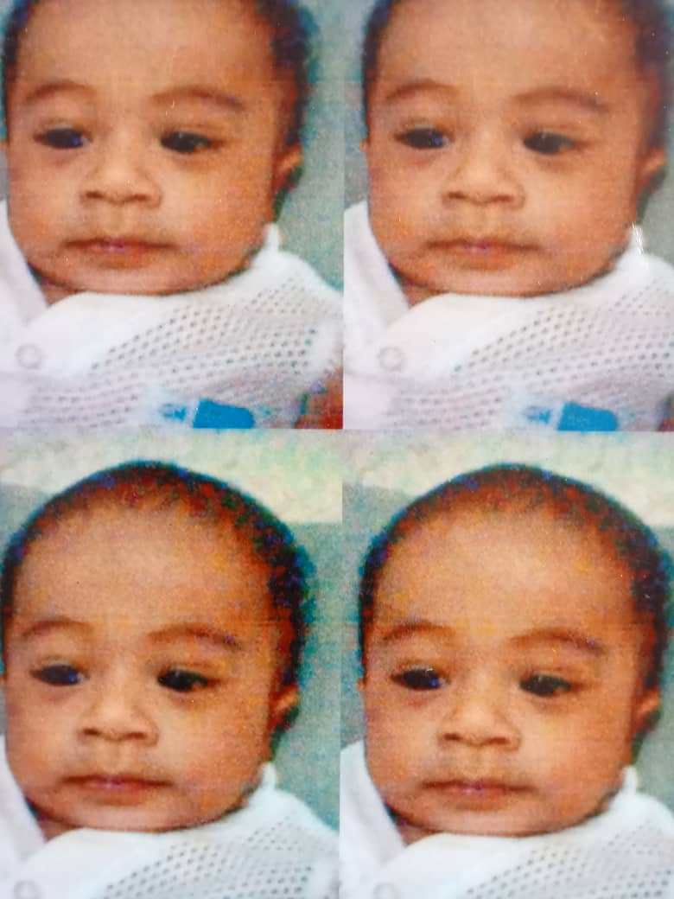 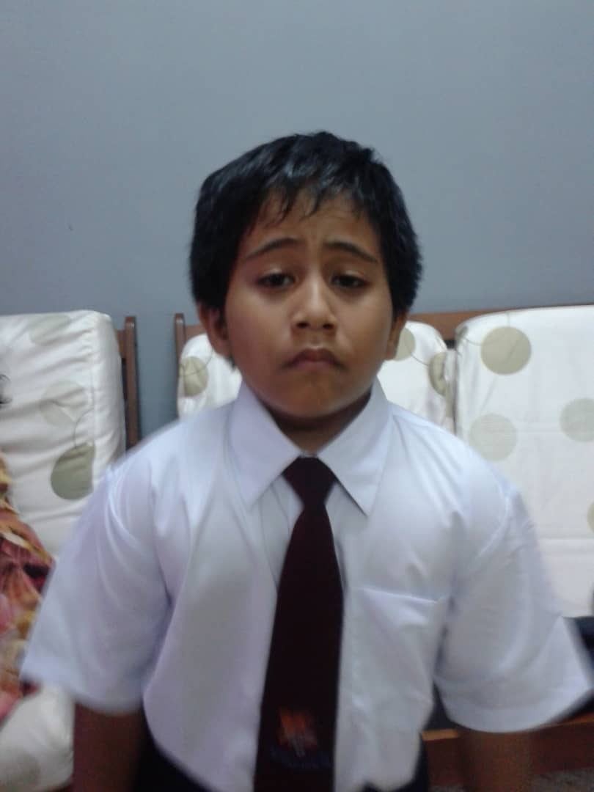 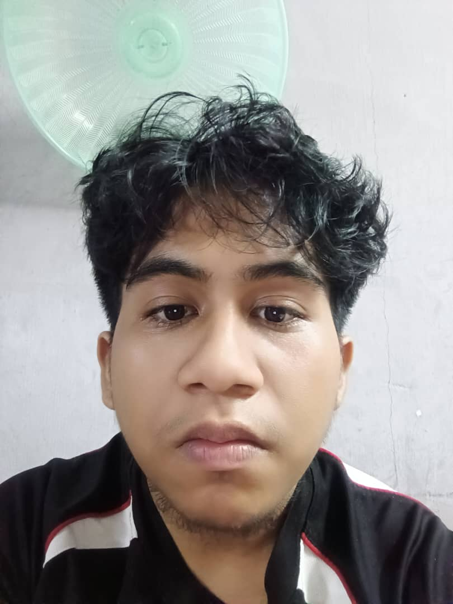Appearance
Skin Color: Tanned(Brown)
Hair type: Wavy(2B)
Hair color: Black
Eye type: Deep Side
Eye Color: Brown
Personality
First Traits: Curious and Eager to Learn
Secondary Traits: Reflective and Thoughtful
Third Traits: Perfectionist by Nature
Fourth Traits: Introverted but Open to Connectio
Fifth Traits: Emotionally Aware and Empathetic
Six Traits: Driven by Growth and Improvement
Seventh Traits: Value Authentic Expression
Hometown
Nation: Malaysia
State: Johor Daru Takzim
District: Batu Pahat
Mukims: Simpang Kanan
Education
| Level | Institution | Year |
|---|---|---|
| Kindergarten | Tabika Perpaduan | 2010 - 2011 |
| Primary School | SMK Seri Puteri | 2012 - 2017 |
| High School | SMK Datin Onn Jaafar | 2018 - 2022 |
| Diploma | Universiti Teknologi Mara (UiTM),Campus in Kedah | 2023 - 2026 |
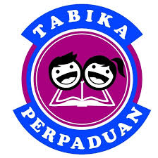Tabika Perpaduan
SK Seri Puteri
SMK Datin Onn Jaafar
UiTM Cawangan Kedah
See Also
Relationships
"The Heart of Home"
Family is the heart of home,
A place where love and kindness roam.
In every laugh, in every tear,
Their voices calm, their presence near.
A father's strength, a guiding light,
A mother’s warmth through day and night.
A sister’s smile, a brother’s care,
In every corner, love is there.
They lift you up when you are down,
They cheer you on without a frown.
Through storms and sun, through joy and pain,
Their love remainsa gentle chain.
Not just in blood, but in the soul,
Their presence makes the broken whole.
A bond that time cannot erase,
Forever held in heart and grace.
So cherish them, both near and far,
Your family is just who you are.
A gift of life, a sacred part
Forever home within your heart.
My Family
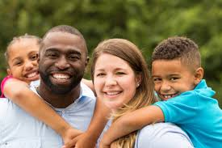
I come from a small but loving and supportive family that consists of four members: my father, my mother, my younger sister, and myself. We live together under one roof and share a strong emotional bond that is built on mutual respect, care, and understanding. My father is the head of the family and works hard to provide for us. He is a disciplined and responsible person who always encourages us to be independent and dedicated in whatever we do. My mother is a warm and nurturing figure in our home. She not only manages the household with great care and patience but also provides us with moral guidance and emotional support whenever we need it. She always ensures that our family remains united and happy.
As the eldest child, I take my responsibilities seriously and try to be a good role model for my younger sister. I help my parents with household tasks and support my sister in her studies and daily activities. My younger sister is cheerful, curious, and full of energy. Although she is younger than me, I often learn valuable lessons from her sense of joy and creativity. We spend a lot of time together, whether studying, playing games, watching movies, or simply having conversations about our day. These moments help strengthen the bond between us and create memories that I will always cherish.
Our family structure is known as a nuclear family, which consists of parents and their children living in a single household. Unlike extended families that may include grandparents, uncles, or aunts, a nuclear family is typically smaller and more self-contained. Despite its smaller size, I believe that a nuclear family can still provide a strong foundation of emotional, social, and moral support. In our case, we always make an effort to stay connected, share our thoughts and feelings openly, and be there for each other during both good times and challenging moments. I am truly grateful to be part of a family that values love, trust, and unity, and I believe that my family plays a vital role in shaping who I am today.
Familys
✨ Origin ✨
I have a large and multi-racial family background. My father is of Malay/Bugis descent from Malaysia and Javanese from Singapore. My father also said that he also has family in Sulawesi, Indonesia. My mother is of Arab descent from Hadramaut, Yemen and Han from China. My mother's family ancestors originally came to Malaysia to trade. A big change occurred when they fell in love with the locals and married them. Because they had lived in Malaysia for a long time, my mother's family did not have a basic knowledge of their native language and only communicated using Malay. For me, having a large family is very fun because we always meet and do activities together. We are inseparable and always close. Therefore, I am grateful and thank God for the blessing of a happy and loving family towards me.
Name
Realtionships
Lineage
Razak Bin Mohammad Yusof
Father
Malay, Bugis and Javanese
Hanim Binti Sheikh Salim
Mother
Arab and Chinese
Faqihah Zalikha Binti Razak
Younger sister
Malay and Arab
Friends
I am fortunate to have friends from a variety of backgrounds, personalities, and interests. Each of them brings something unique into my life.Whether it's knowledge, support, laughter, or perspective. From these friendships, I have learned many valuable lessons about understanding others, respecting differences, and growing together. Some friends challenge me intellectually, while others remind me to relax and enjoy life. Having such diversity in my circle has taught me that every individual has their own way of seeing the world, and through them, I continue to discover new things about people and about myself.
I believe that friendship is a natural human need. People are not meant to live in isolation. We crave connection, communication, and someone to share our lives with. Friendships provide a space where we can express our thoughts, show our talents, and share our feelings openly. Whether it's joy, sadness, success, or failure, having someone to listen or simply be present can make all the difference. Human beings are social by nature, and the bonds we form through friendship help us feel accepted, supported, and understood. That is why I truly believe that everyone needs a friend in their life.
Friendship is not just about having fun or spending time together, it is also about trust, loyalty, and emotional support. A true friend is someone who stays by your side through both joyful and difficult times. They listen without judgment, give honest advice, and help you become a better version of yourself. I've experienced moments when a simple conversation with a friend helped me feel understood and less alone. Those small acts of kindness, laughter, or encouragement leave a lasting impact on the heart and make friendship something deeply valuable in life.
In the end, friends are more than just people we spend time with,they are reflections of who we are and who we are becoming. Through them, we learn to communicate better, to understand emotions, and to appreciate the importance of connection. Life becomes more meaningful when we have people to share our stories, goals, and challenges with. That is why I believe friendship is not just a want, but a need because no matter how strong or independent we are, we all need someone to walk beside us, remind us we matter, and help us feel truly human.
Skills
(Abilities developed through learning and experience)
Research & Information-Seeking
Able to explore, find, and understand new information from various sources.
Communication Skills
Effective in expressing ideas and engaging in conversations with others.
Critical Thinking
Can analyze, evaluate, and reflect on ideas or information logically.
Interpersonal Skills
Able to build and maintain positive relationships with different people.
Adaptability & Flexibility
Easily adjusts to new situations, environments, and challenges.
Self-Discipline
Consistently motivated and responsible in completing tasks and goals.
Attention to Detail
Pays close attention to accuracy and quality in all work.
Talents
(Natural abilities or qualities i possess)
Curiosity & Love for Learning
Naturally driven to explore new knowledge across many fields.
Open-Mindedness
Willing to accept new ideas and perspectives without judgment.
Empathy
Understands and connects well with others’ feelings and experiences.
Perfectionism
Has a natural desire to achieve high standards and deliver the best results.
Creativity
Thinks in original and imaginative ways, often generating new ideas.
Sociability
Enjoys meeting new people and feels comfortable in different social settings.
Hobbies
My hobby is learning and discovering new things, whether they already exist or are yet to emerge in the world. I am deeply interested in various forms of knowledge and information, regardless of the field or topic, because I believe that every subject holds its own uniqueness and value. I have a broad curiosity and do not limit myself to specific areas of interest,I genuinely enjoy everything and there is nothing that I dislike. This passion drives me to continuously seek, read, watch, and ask questions in order to gain a deeper understanding of the ever-evolving world around me. Whether it relates to science, technology, culture, history, art, or current issues, I am always enthusiastic about learning more. This open-minded approach not only makes learning more enjoyable, but also helps me become a more flexible, well-informed individual who is prepared to face future changes and challenges.
In addition to my passion for gaining knowledge, I also enjoy building new friendships and meeting people I have not known before. I believe that every person I encounter brings unique perspectives, experiences, and values from which I can learn and grow. The process of forming connections and understanding others helps me improve my communication skills and empathy, while also broadening my view of life. I see friendship not only as a social bond, but also as a meaningful bridge for sharing knowledge, culture, and experiences. With a friendly and open attitude, I strive to create positive and meaningful relationships with people from all walks of life.
My hobbies also serve as a way for me to connect with the world in a more thoughtful and intentional manner. Whether I’m learning through reading, observing people, or listening to others’ life stories, I always try to gain insight and understanding. I don’t limit myself to one topic or area from technology to philosophy, from art to current events, I believe there is something to learn from everything. This wide range of interest keeps my mind active and allows me to adapt to different situations with confidence and curiosity. My love for learning is not about collecting information, but about using knowledge to grow and make better decisions in life.
Through these hobbies, I have come to value the process of growth more than the outcome itself. Every new idea I explore, every person I meet, and every small step I take adds to my journey of self-development. I believe that learning, connecting with others, and striving for excellence are not just interests they are part of who I am. These hobbies give me purpose, motivation, and the courage to keep improving. As I continue to discover new things, I hope to not only understand the world better but also contribute to it in meaningful ways.
In conclusion, my passion for learning and my openness to all forms of knowledge reflect my desire to grow continuously as an individual. Coupled with my interest in forming new friendships and connecting with people from diverse backgrounds, I believe these qualities shape me into someone who is not only intellectually curious but also socially engaged. Furthermore, I strive to be a perfectionist in everything.I believe in giving my best effort, paying attention to detail, and constantly improving myself. This mindset drives me to pursue excellence in both personal development and interactions with others. I look forward to every opportunity that allows me to expand my understanding of the world, build meaningful connections, and achieve the highest standards in everything I set out to do.
🎬 Favourite Movie and Series
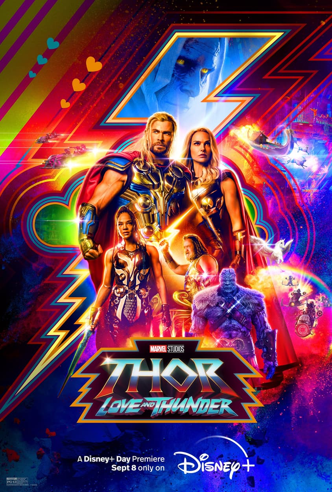
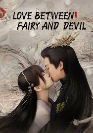
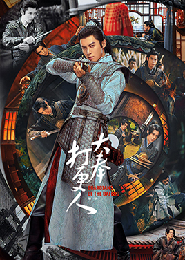
🎵 Favourite Song
"River Flows in You" by Yiruma (violin cover)
"Endless love" by Eliott Tordo & The China Oriental
"Wave Your Flag" by Now United
🍽️ Favourite Food
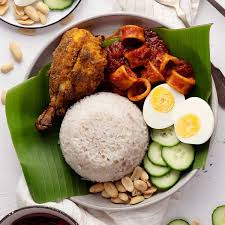
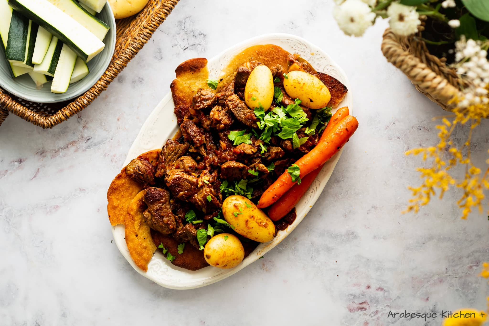
📚 Favourite Book
Soul Land 2.5 - Legend of The Gods' Realm
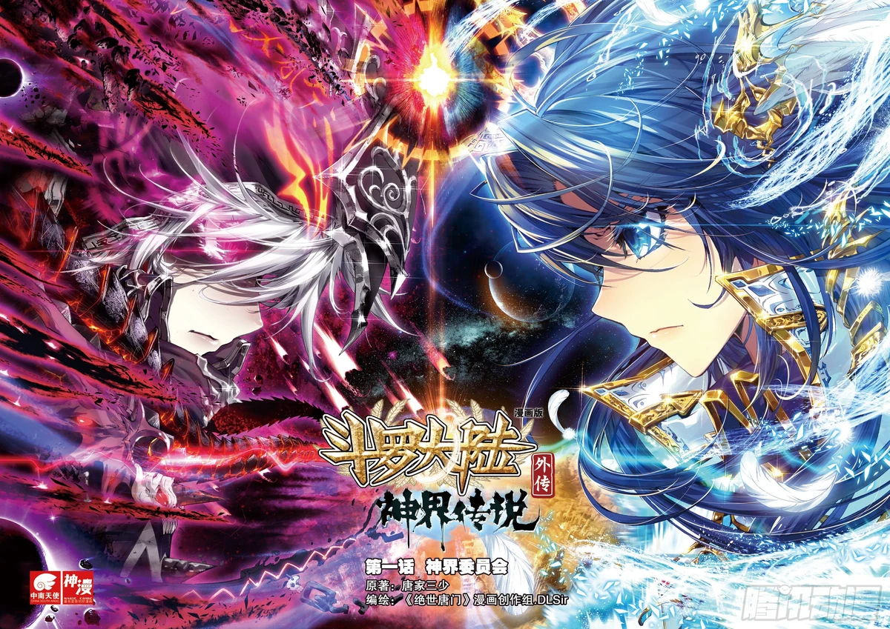
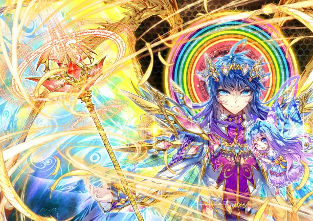
Read Comics
🐉 Favourite Animation
Donghua: The Swallowed Star (Season 1, 2, 3) (Tunshi Xingkong)
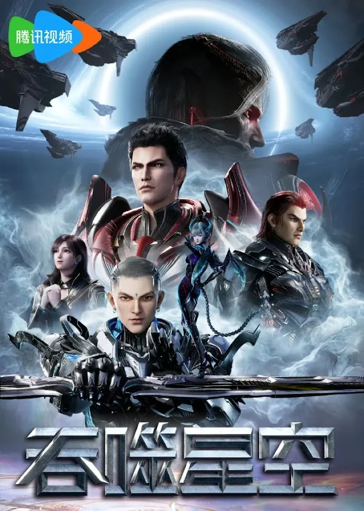
Donghua: Tales of Herding Gods (Mu Shen Ji)
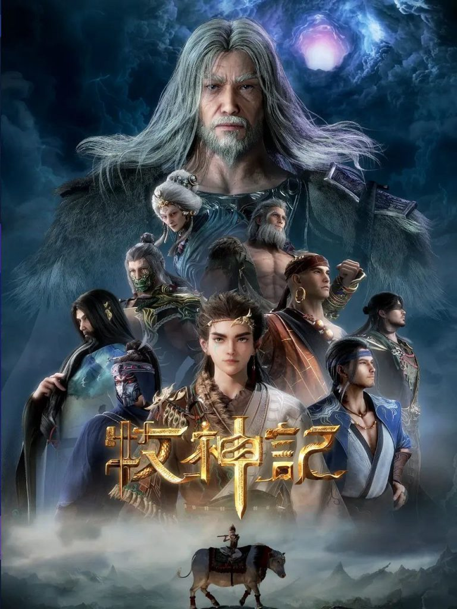
Donghua: My Senior Brother is Too Steady (Big Brother) (Shi Xiong A Shi Xiong)
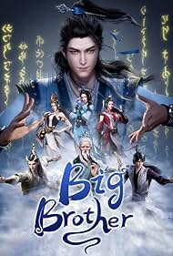
I'm deeply interested in technology, design, and how both intersect to shape the world we live in.
Gallery
Contact
Contact
Description
Whatsupp
O18-764-8735
Instagram
mr_unknownses
 Email
Emailmuhammad200412rbs@gmail.com
 Tiktok
Tiktokmuhammad.thaqif7105
Recommendation
I am someone who likes to hear other people's opinions. Therefore, I hope that visitors who pass by this website can give me interesting suggestions and ideas that I can try and learn from. You are allowed to comment on this website. Here is the form that you can all fill out:
"The Heart of Home"
Family is the heart of home,
A place where love and kindness roam.
In every laugh, in every tear,
Their voices calm, their presence near.
A father's strength, a guiding light,
A mother’s warmth through day and night.
A sister’s smile, a brother’s care,
In every corner, love is there.
They lift you up when you are down,
They cheer you on without a frown.
Through storms and sun, through joy and pain,
Their love remainsa gentle chain.
Not just in blood, but in the soul,
Their presence makes the broken whole.
A bond that time cannot erase,
Forever held in heart and grace.
So cherish them, both near and far,
Your family is just who you are.
A gift of life, a sacred part
Forever home within your heart.
I come from a small but loving and supportive family that consists of four members: my father, my mother, my younger sister, and myself. We live together under one roof and share a strong emotional bond that is built on mutual respect, care, and understanding. My father is the head of the family and works hard to provide for us. He is a disciplined and responsible person who always encourages us to be independent and dedicated in whatever we do. My mother is a warm and nurturing figure in our home. She not only manages the household with great care and patience but also provides us with moral guidance and emotional support whenever we need it. She always ensures that our family remains united and happy.
As the eldest child, I take my responsibilities seriously and try to be a good role model for my younger sister. I help my parents with household tasks and support my sister in her studies and daily activities. My younger sister is cheerful, curious, and full of energy. Although she is younger than me, I often learn valuable lessons from her sense of joy and creativity. We spend a lot of time together, whether studying, playing games, watching movies, or simply having conversations about our day. These moments help strengthen the bond between us and create memories that I will always cherish.
Our family structure is known as a nuclear family, which consists of parents and their children living in a single household. Unlike extended families that may include grandparents, uncles, or aunts, a nuclear family is typically smaller and more self-contained. Despite its smaller size, I believe that a nuclear family can still provide a strong foundation of emotional, social, and moral support. In our case, we always make an effort to stay connected, share our thoughts and feelings openly, and be there for each other during both good times and challenging moments. I am truly grateful to be part of a family that values love, trust, and unity, and I believe that my family plays a vital role in shaping who I am today.
Familys
✨ Origin ✨
I have a large and multi-racial family background. My father is of Malay/Bugis descent from Malaysia and Javanese from Singapore. My father also said that he also has family in Sulawesi, Indonesia. My mother is of Arab descent from Hadramaut, Yemen and Han from China. My mother's family ancestors originally came to Malaysia to trade. A big change occurred when they fell in love with the locals and married them. Because they had lived in Malaysia for a long time, my mother's family did not have a basic knowledge of their native language and only communicated using Malay. For me, having a large family is very fun because we always meet and do activities together. We are inseparable and always close. Therefore, I am grateful and thank God for the blessing of a happy and loving family towards me.
Name
Realtionships
Lineage
Razak Bin Mohammad Yusof
Father
Malay, Bugis and Javanese
Hanim Binti Sheikh Salim
Mother
Arab and Chinese
Faqihah Zalikha Binti Razak
Younger sister
Malay and Arab
Friends
I have a large and multi-racial family background. My father is of Malay/Bugis descent from Malaysia and Javanese from Singapore. My father also said that he also has family in Sulawesi, Indonesia. My mother is of Arab descent from Hadramaut, Yemen and Han from China. My mother's family ancestors originally came to Malaysia to trade. A big change occurred when they fell in love with the locals and married them. Because they had lived in Malaysia for a long time, my mother's family did not have a basic knowledge of their native language and only communicated using Malay. For me, having a large family is very fun because we always meet and do activities together. We are inseparable and always close. Therefore, I am grateful and thank God for the blessing of a happy and loving family towards me.
| Name | Realtionships | Lineage |
|---|---|---|
| Razak Bin Mohammad Yusof | Father | Malay, Bugis and Javanese |
| Hanim Binti Sheikh Salim | Mother | Arab and Chinese |
| Faqihah Zalikha Binti Razak | Younger sister | Malay and Arab |
I am fortunate to have friends from a variety of backgrounds, personalities, and interests. Each of them brings something unique into my life.Whether it's knowledge, support, laughter, or perspective. From these friendships, I have learned many valuable lessons about understanding others, respecting differences, and growing together. Some friends challenge me intellectually, while others remind me to relax and enjoy life. Having such diversity in my circle has taught me that every individual has their own way of seeing the world, and through them, I continue to discover new things about people and about myself.
I believe that friendship is a natural human need. People are not meant to live in isolation. We crave connection, communication, and someone to share our lives with. Friendships provide a space where we can express our thoughts, show our talents, and share our feelings openly. Whether it's joy, sadness, success, or failure, having someone to listen or simply be present can make all the difference. Human beings are social by nature, and the bonds we form through friendship help us feel accepted, supported, and understood. That is why I truly believe that everyone needs a friend in their life.
Friendship is not just about having fun or spending time together, it is also about trust, loyalty, and emotional support. A true friend is someone who stays by your side through both joyful and difficult times. They listen without judgment, give honest advice, and help you become a better version of yourself. I've experienced moments when a simple conversation with a friend helped me feel understood and less alone. Those small acts of kindness, laughter, or encouragement leave a lasting impact on the heart and make friendship something deeply valuable in life.
In the end, friends are more than just people we spend time with,they are reflections of who we are and who we are becoming. Through them, we learn to communicate better, to understand emotions, and to appreciate the importance of connection. Life becomes more meaningful when we have people to share our stories, goals, and challenges with. That is why I believe friendship is not just a want, but a need because no matter how strong or independent we are, we all need someone to walk beside us, remind us we matter, and help us feel truly human.
Skills
(Abilities developed through learning and experience)
Research & Information-Seeking
Able to explore, find, and understand new information from various sources.Communication Skills
Effective in expressing ideas and engaging in conversations with others.Critical Thinking
Can analyze, evaluate, and reflect on ideas or information logically.Interpersonal Skills
Able to build and maintain positive relationships with different people.Adaptability & Flexibility
Easily adjusts to new situations, environments, and challenges.Self-Discipline
Consistently motivated and responsible in completing tasks and goals.Attention to Detail
Pays close attention to accuracy and quality in all work.
Talents
(Natural abilities or qualities i possess)
Curiosity & Love for Learning
Naturally driven to explore new knowledge across many fields.Open-Mindedness
Willing to accept new ideas and perspectives without judgment.Empathy
Understands and connects well with others’ feelings and experiences.Perfectionism
Has a natural desire to achieve high standards and deliver the best results.Creativity
Thinks in original and imaginative ways, often generating new ideas.Sociability
Enjoys meeting new people and feels comfortable in different social settings.
Hobbies
My hobby is learning and discovering new things, whether they already exist or are yet to emerge in the world. I am deeply interested in various forms of knowledge and information, regardless of the field or topic, because I believe that every subject holds its own uniqueness and value. I have a broad curiosity and do not limit myself to specific areas of interest,I genuinely enjoy everything and there is nothing that I dislike. This passion drives me to continuously seek, read, watch, and ask questions in order to gain a deeper understanding of the ever-evolving world around me. Whether it relates to science, technology, culture, history, art, or current issues, I am always enthusiastic about learning more. This open-minded approach not only makes learning more enjoyable, but also helps me become a more flexible, well-informed individual who is prepared to face future changes and challenges.
In addition to my passion for gaining knowledge, I also enjoy building new friendships and meeting people I have not known before. I believe that every person I encounter brings unique perspectives, experiences, and values from which I can learn and grow. The process of forming connections and understanding others helps me improve my communication skills and empathy, while also broadening my view of life. I see friendship not only as a social bond, but also as a meaningful bridge for sharing knowledge, culture, and experiences. With a friendly and open attitude, I strive to create positive and meaningful relationships with people from all walks of life.
My hobbies also serve as a way for me to connect with the world in a more thoughtful and intentional manner. Whether I’m learning through reading, observing people, or listening to others’ life stories, I always try to gain insight and understanding. I don’t limit myself to one topic or area from technology to philosophy, from art to current events, I believe there is something to learn from everything. This wide range of interest keeps my mind active and allows me to adapt to different situations with confidence and curiosity. My love for learning is not about collecting information, but about using knowledge to grow and make better decisions in life.
Through these hobbies, I have come to value the process of growth more than the outcome itself. Every new idea I explore, every person I meet, and every small step I take adds to my journey of self-development. I believe that learning, connecting with others, and striving for excellence are not just interests they are part of who I am. These hobbies give me purpose, motivation, and the courage to keep improving. As I continue to discover new things, I hope to not only understand the world better but also contribute to it in meaningful ways.
In conclusion, my passion for learning and my openness to all forms of knowledge reflect my desire to grow continuously as an individual. Coupled with my interest in forming new friendships and connecting with people from diverse backgrounds, I believe these qualities shape me into someone who is not only intellectually curious but also socially engaged. Furthermore, I strive to be a perfectionist in everything.I believe in giving my best effort, paying attention to detail, and constantly improving myself. This mindset drives me to pursue excellence in both personal development and interactions with others. I look forward to every opportunity that allows me to expand my understanding of the world, build meaningful connections, and achieve the highest standards in everything I set out to do.
🎬 Favourite Movie and Series
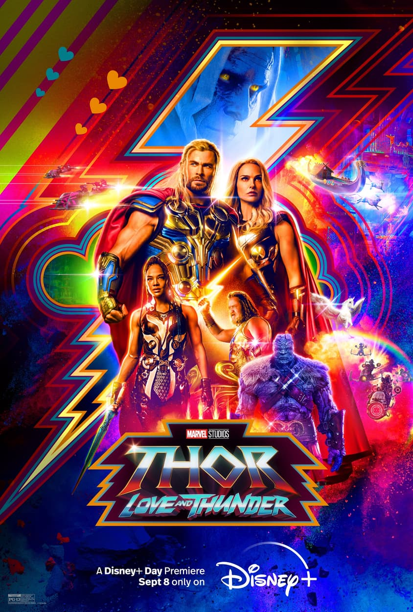 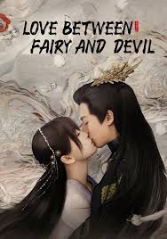 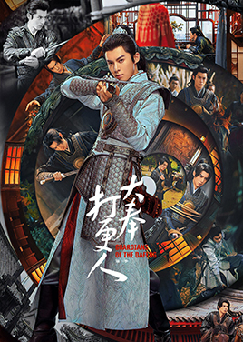🎵 Favourite Song
"River Flows in You" by Yiruma (violin cover)
"Endless love" by Eliott Tordo & The China Oriental
"Wave Your Flag" by Now United
🍽️ Favourite Food
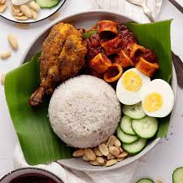 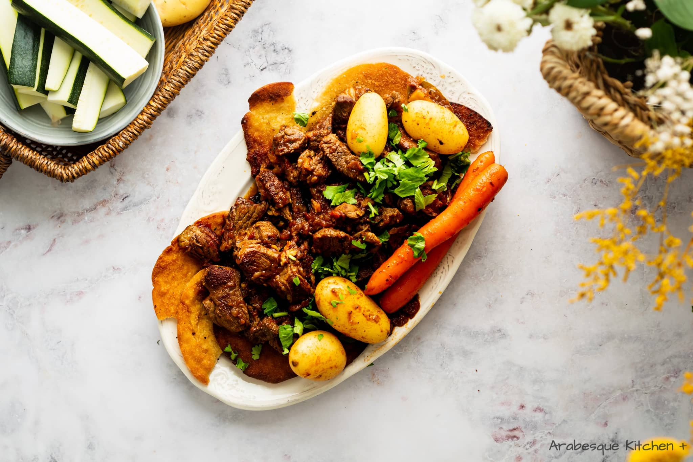📚 Favourite Book
Soul Land 2.5 - Legend of The Gods' Realm
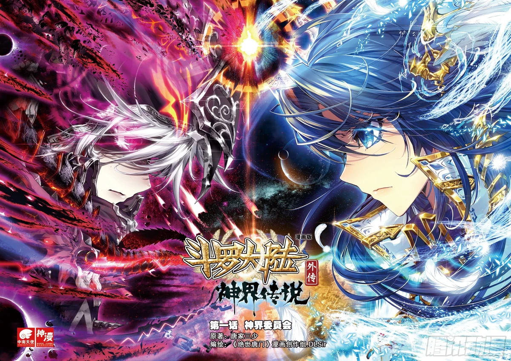 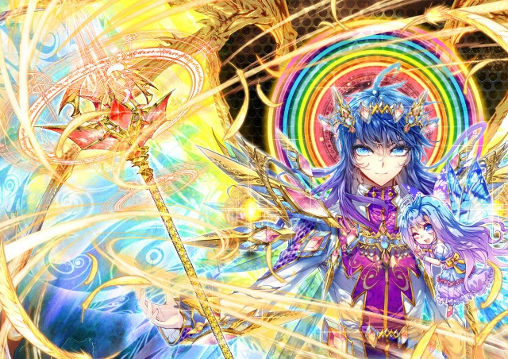Read Comics
🐉 Favourite Animation
Donghua: The Swallowed Star (Season 1, 2, 3) (Tunshi Xingkong)
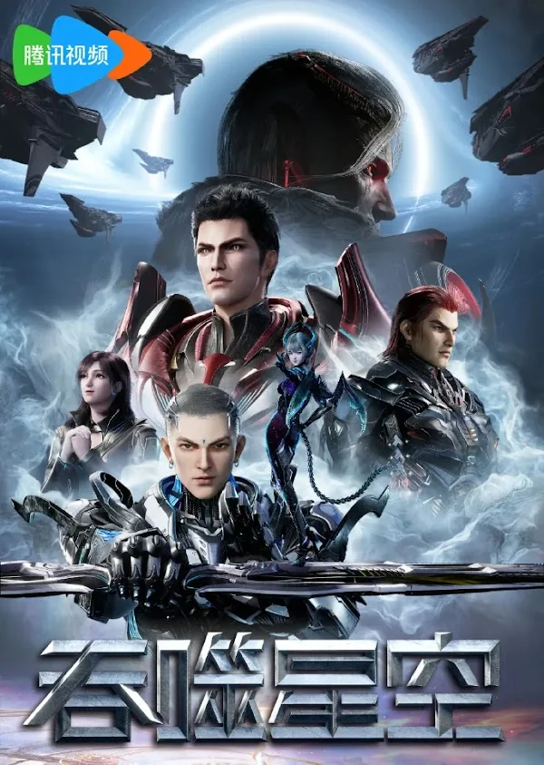Donghua: Tales of Herding Gods (Mu Shen Ji)
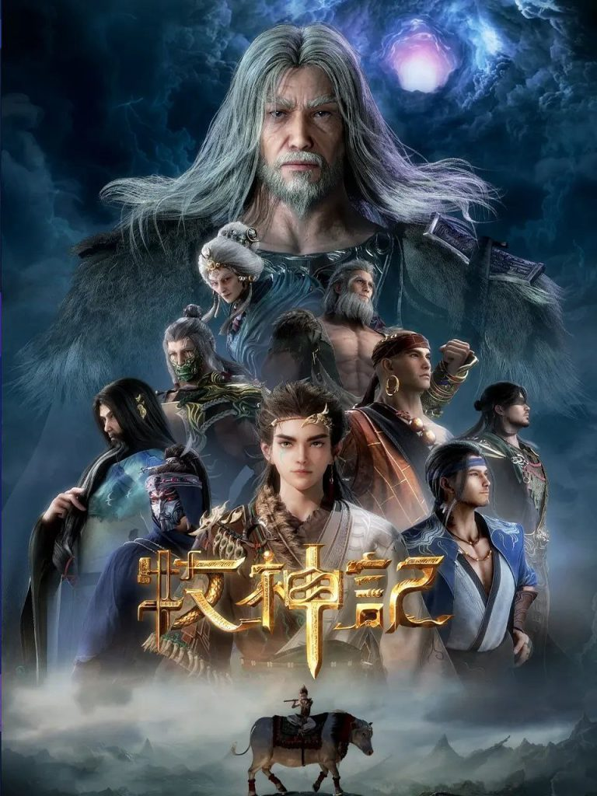Donghua: My Senior Brother is Too Steady (Big Brother) (Shi Xiong A Shi Xiong)
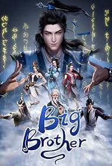I'm deeply interested in technology, design, and how both intersect to shape the world we live in.
Gallery
Contact
| Contact | Description |
|---|---|
| Whatsupp | O18-764-8735 |
| mr_unknownses | |
| Email |
muhammad200412rbs@gmail.com |
| Tiktok |
muhammad.thaqif7105 |
Recommendation
I am someone who likes to hear other people's opinions. Therefore, I hope that visitors who pass by this website can give me interesting suggestions and ideas that I can try and learn from. You are allowed to comment on this website. Here is the form that you can all fill out: